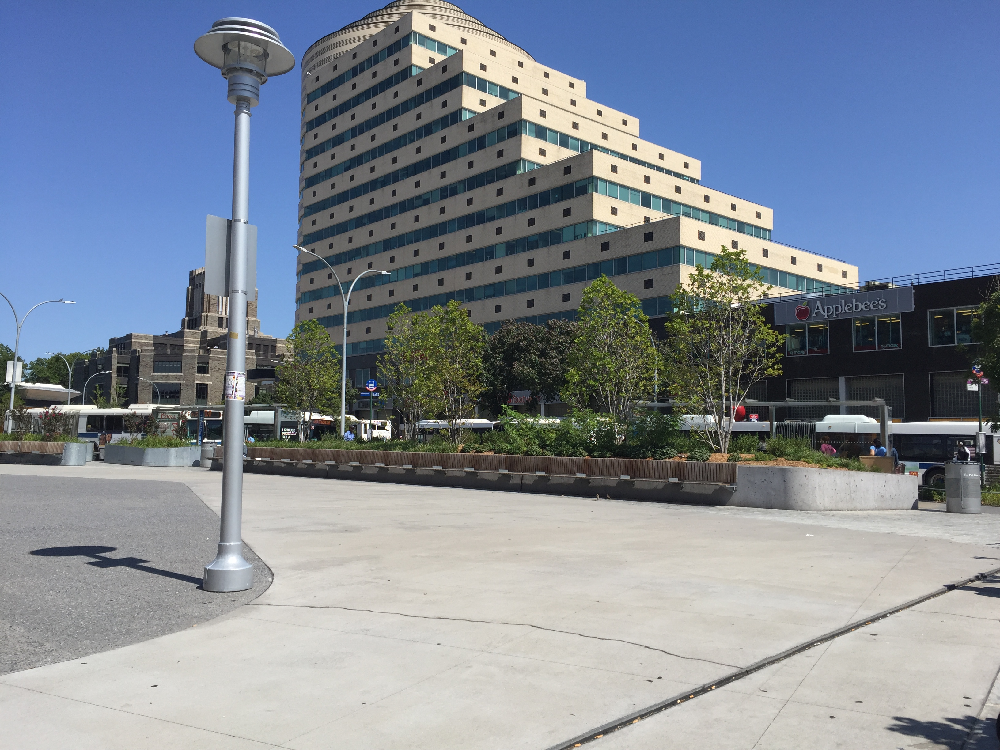
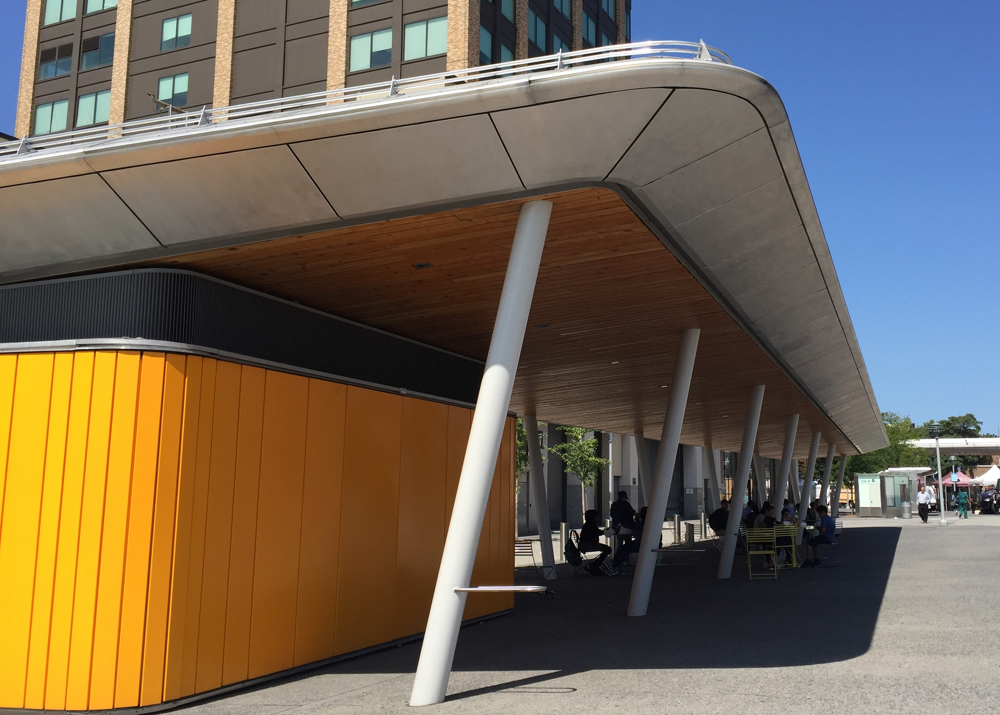
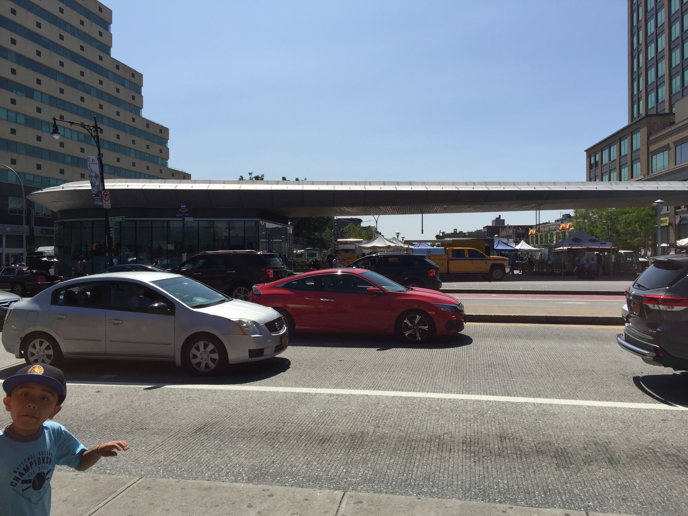

The Newly Revamped Fordham Plaza
 In an article entitled "See what Fordham Plaza will look like this time next year", by Catherine Yang, in the Epoch Times, August 27, 2014. Ms. Yang spoke about the $10 million dollarTIGER GRANT, for the reconstruction of Fordham Plaza.
Ms.Yang states that this project was necessary to provide more pedestrian space, to reduce traffic related injuries, and to boost businesses and the local neighborhood. Also to beautify and make the Bronx more welcoming.
Introduction:
Fordham Plaza is now more friendlier than ever. Although the plaza never became the "Times Square of the Bronx", as many officials had hoped for. One Fordham Plaza (above) is no longer the "Yellow Elephant!" it use to be.
Now the Plaza is much busier, cleaner, brighter, and colorful. There are so many food places in the area now. Employees and families can enjoy their meals out doors.
The Future of the Bronx
 On June 7, 2017. Channel 12 News, reported that the Farmers' Market will be coming to Fordham plaza. The market will provide fresh fruits and vegetables to Bronx Residence, every Wednesday through December. Also the Green Market will be conducting cooking classes and seminars as well. *Today the Green Market have their trucks full of goods and their tents are set up and ready.
My New York
One place that have a special meaning for me is Fordham Plaza. Fordham Plaza is a small area located in Bronx, New York. The area is between Fordham Road and Webster Ave. Across the street is Fordham University. There are many buses that stop near the Plaza. The Bx#41, 15, 9, 22, 12, 55, not to mention the Metro North Railroad and Bee-lines buses. Also, there are many shopping stores on Fordham Rd, but that is not why this place is so memorable to me. This place is memorable to me because this is a stop, I would make before going home or to somewhere else. I just cannot pass this place without sitting down for a "few "before continuing my travels.
I cannot recall the first time I came here. I was very young maybe three or four. Everyday my mother and I would stop by Fordham Plaza to sit, talk, eat, while watching the buses roll by. Most of the time it was a rest before boarding the next bus or taking the Metro-North Railroad, to our destination. Mom was either taking me to or picking me up from daycare or elementary school. When mom was running late, we would take the Metro-North to my school and her job. Also, Fordham Plaza was where I received plenty of threats and warnings about misbehaving on MTA. On good days, mom would treat me to a N.Y. dirty water hot dog or a shish-kabob. I remember being afraid sometimes when we had to take the Metro-North because there were many panhandlers there, and homeless people sleeping on the broken-down corroded benches. There weren’t many places to sit. You were lucky if you can find a third of a bench to sit on. The place was run-down. There were cobblestone paths to twist your ankle on. Mom did that a lot and so did the high school and college girls, as they run for the bus or train with high heels.
I revisited Fordham Plaza as a high school student. My friends and I would stop there to buy one-dollar pizza before going home. The one-dollar pizza place was located where the artwork place is now. In my high school days, people couldn’t really sit there or should I say you couldn’t sit there for long. silver metal balls were put down. You can sit on them, but not in the summer because they would get very hot. The place was filled with vendors selling jewelry, food, clothes, books, and handmade things. By the time I became a senior, the place was closed for renovation. The place was said to be an eyesore. Fordham Plaza re-opened last year and it looked really good. Everything was brand new. All the benches were replacement. The plaza now has a public bathroom. People can now eat their lunches at the outdoor dining area. Employees, students, and families can sit there in peace.
I would encourage all to go there, especially if you remembered what it used to look like. Finally, Bronx residence have something nice to be proud of. All of the buses mentioned above and the Metro North will take you straight there. Personally, I would encourage you to go early, because in the evening vendors comes out at night and setup all over the sidewalk. Which is not a bad thing, if you like to browse and say "excuse me" 50 million times.
The last time I was at Fordham Plaza was right before the summer. Already there are changes. Two large and very nice sculptures disappeared. I was looking forward to taking pictures of them today. But a Metro North worker sitting in his work van told me that he "thinks" that the city had removed them. Maybe that was best because several times I would see high school kids trying to climb or sitting inside the sculptures. Some of the artwork I couldn’t take a picture of, because a man had all kinds of stuff that he was selling in front of it. Plus, today was the Farmer’s Market Wednesday, I had forgotten. Fordham Plaza has transformed many times but, this is the best it has ever looked! Even now I will still go there to sit, listen to music, read, and watch the crowd go by. This will always be a good place to take a rest from all the hustle and bustle of the day.